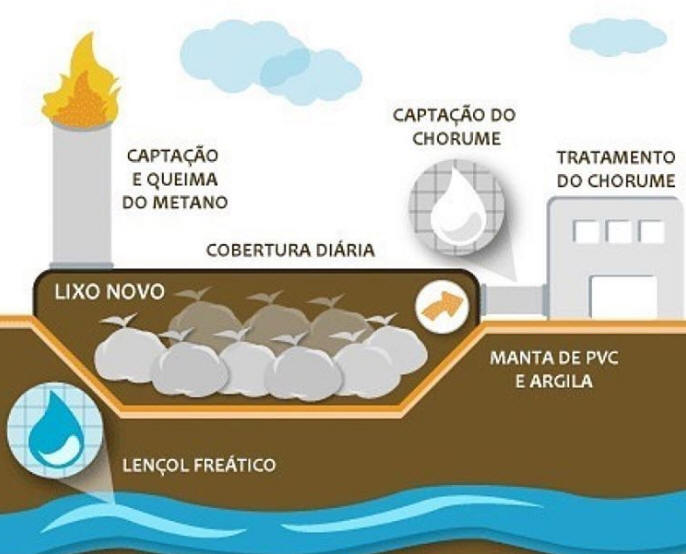

Após dispostos nos aterros sanitários, os resíduos sólidos urbanos, que contém significativa parcela de matéria orgânica biodegradável, passam por um processo de digestão anaeróbia.
O processo de digestão anaeróbia dos resíduos ocorre pela ação de microorganismos que transformam a matéria orgânica em um gás conhecido no Brasil como “biogás”. O biogás gerado nos aterros sanitários é composto basicamente pelos seguintes gases: metano (CH4), dióxido de carbono (CO2), nitrogênio (N2), hidrogênio (H2), oxigênio (O2) e gás sulfídrico (H2S). Pelas características dos resíduos sólidos no Brasil, o biogás gerado na maioria dos aterros sanitários apresenta elevada concentração de metano, acima de 55%, e de Dióxido de Carbono, acima de 30%. O biogás gerado nos aterros sanitários, por contar em sua composição com metano e dióxido de carbono, é um dos gases formadores do fenômeno conhecido efeito estufa e que vem contribuindo para o aquecimento do planeta. Estudos existentes indicam que, considerando um período de 100 anos, 1 grama de metano contribui 21 vezes mais para a formação do efeito estufa do que 1 grama de dióxido de carbono. Assim, o biogás gerado nos aterros sanitários deve ser drenado e queimado para mitigação dos efeitos causados pelo seu lançamento na atmosfera, notadamente no que concerne a potencialização do efeito estufa. A queima do biogás transforma o metano em dióxido de carbono e vapor d´água.
Aproveitamento Energético do Biogás de Aterro Sanitário A Geração de Biogás nos Aterros Sanitários
A disposição final de resíduos sólidos urbanos produz emissões de gases causadores do efeito estufa. Com o aumento da população mundial hoje estimada em 6,0 bilhões e o grau de urbanização que representa 75% do total da população vivendo em cidades, torna-se clara a necessidade de um correto gerenciamento da disposição final de resíduos sólidos urbanos.
Para estimar a composição e o quantitativo do biogás a ser produzido no aterro, pode ser utilizado o modelo matemático do Intergovernmental Panel on Climate Change (IPCC) - Waste Model, disponível no sítio eletrônico http://cdm.unfccc.int/index.html.
Composição do Biogás de Aterro
Um aterro de resíduos sólidos pode ser considerado como um reator biológico onde as principais entradas são os resíduos e a água e as principais saídas são os gases e o chorume. A decomposição da matéria orgânica ocorre por dois processos, o primeiro processo é de decomposição aeróbia e ocorre normalmente no período de deposição do resíduo. Após este período, a redução do O2 presente nos resíduos dá origem ao processo de decomposição anaeróbia.
O gás de aterro é composto por vários gases, alguns presentes em grandes quantidades como o metano e o dióxido de carbono e outros em quantidades em traços. Os gases presentes nos aterros de resíduos incluem o metano (CH4), dióxido de carbono (CO2), amônia (NH3), hidrogênio (H2), gás sulfídrico (H2S), nitrogênio (N2) e oxigênio (O2). O metano e o dióxido de carbono são os principais gases provenientes da decomposição anaeróbia dos compostos biodegradáveis dos resíduos orgânicos. A distribuição exata do percentual de gases variará conforme a antiguidade do aterro.
Os fatores que podem influenciar na produção de biogás são: composição dos resíduos dispostos, umidade, tamanho das partículas, temperatura, pH, Idade dos resíduos, projeto do aterro e sua operação.
Geralmente, a geração de biogás inicia-se após a disposição dos resíduos sólidos, encontrando-se, registros de metano ainda nos primeiros três meses após a disposição, podendo continuar por um período de 20, 30 ou até mais anos depois do encerramento do aterro. O gás proveniente dos aterros contribui consideravelmente para o aumento das emissões globais de metano. As estimativas das emissões globais de metano, provenientes dos aterros, oscilam entre 20 e 70 Tg/ano, enquanto que o total das emissões globais pelas fontes antropogênicas equivale a 360 Tg/ano, indicando que os aterros podem produzir cerca de 6 a 20 % do total de metano (IPCC, 1995).
Segundo o Primeiro Inventário Nacional de Emissões Antrópicas de Gases de Efeito Estufa, realizado pelo Governo Federal em 2005, as emissões de metano por resíduos sólidos no Brasil, para o ano de 1990, foram estimadas em 618 Gg, aumentando para 677 Gg no ano de 1994. As emissões de metano geradas no tratamento dos resíduos líqüidos de origem doméstica e comercial foram estimadas em 39 Gg para o ano de 1990, subindo para 43 Gg em 1994.
Objetivo do projeto de aproveitamento energético do biogás produzido pela degradação dos resíduos é converte-lo em uma forma de energia útil tais como: eletricidade, vapor, combustível para caldeiras ou fogões, combustível veicular ou para abastecer gasodutos com gás de qualidade. Independente do uso final do biogás produzido no aterro, deve-se projetar um sistema padrão de coleta tratamento e queima do biogás: poços de coleta, sistema de condução, tratamento (inclusive para desumidificar o gás), compressor e flare com queima controlada para a garantia de maior eficiência de queima do metano. Existem diversos projetos de aproveitamento energético no Brasil, como nos aterros Bandeirantes e São João, no município de São Paulo, que já produzem energia elétrica. O Mecanismo de Desenvolvimento Limpo - MDL
Objetivo do projeto de aproveitamento energético do biogás produzido pela degradação dos resíduos é converte-lo em uma forma de energia útil tais como: eletricidade, vapor, combustível para caldeiras ou fogões, combustível veicular ou para abastecer gasodutos com gás de qualidade. Independente do uso final do biogás produzido no aterro, deve-se projetar um sistema padrão de coleta tratamento e queima do biogás: poços de coleta, sistema de condução, tratamento (inclusive para desumidificar o gás), compressor e flare com queima controlada para a garantia de maior eficiência de queima do metano. Existem diversos projetos de aproveitamento energético no Brasil, como nos aterros Bandeirantes e São João, no município de São Paulo, que já produzem energia elétrica. O Mecanismo de Desenvolvimento Limpo - MDL
O MDL permite a certificação de projetos de redução de emissões nos Países não contidos no Anexo I do Protocolo de Quioto e a posterior venda das reduções certificadas de emissão, para serem utilizadas pelos países desenvolvidos como modo suplementar para cumprirem suas metas. Esse mecanismo deve implicar em reduções de emissões adicionais àquelas que ocorreriam na ausência do projeto, garantindo benefícios reais, mensuráveis e de longo prazo para a mitigação da mudança do clima.
Na busca de conciliar o agir local com o pensamento global, o Ministério do Meio Ambiente e o Ministério das Cidades desenvolvem, desde 2004, o "Projeto para Aplicação do Mecanismo de Desenvolvimento do Limpo (MDL), na Redução de Emissões em Aterros de Resíduos Sólidos", financiado pelo Banco Mundial por meio do fundo PHRD (Policy and Human Resources Development Fund ) que opera com recursos do Governo Japonês.
O projeto capacitou, em 2007 e 2008, cerca de 400 agentes locais e técnicos das prefeituras para elaboração de Planos de Gerenciamento Integrado de Resíduos Sólidos e aplicação do Mecanismo de Desenvolvimento Limpo - MDL em projetos de captação e tratamento de gases gerados em locais de destinação final de resíduos. Dentro desta ação foi publicada um conjunto de manuais que encontram-se disponíveis em publicações de Resíduos Sólidos.
O MMA apóia, desde 2007, a elaboração dos Planos Estaduais de Gestão Integrada de Resíduos Urbanos visando organizar a gestão integrada de resíduos sólidos nos estados do Brasil e apoiar o consorciamento entre entes federados. Os planos prevêem a realização de um estudo de regionalização individualizado por estado propondo infra-estrutura necessária para equacionar o problema relacionado à disposição inadequada de resíduos sólidos. Dentre as ações previstas nos Planos, estão a construção de aterros sanitários com previsão de uso tecnologia adequada para a recuperação de metano, a eliminação de lixões, a compostagem e a reciclagem.
O Plano Nacional de Mudanças do Clima contém metas para aumento da reciclagem resíduos sólidos para 20% até o ano de 2015. A perspectiva é tomar como base as experiências exitosas do Programa de Coleta Seletiva de resíduos sólidos domiciliares desenvolvidas em alguns municípios brasileiros. Além disso, o Plano também contém metas de incentivo ao aproveitamento energético do biogás de aterro sanitário.
Outra iniciativa que está sendo proposta é o Programa de compra de resultados futuros no Manejo de Resíduos Sólidos, cujo objetivo principal é a busca de sustentabilidade no processamento de resíduos. O programa incentivará, a partir de 2010, investimentos em aterros sanitários e em galpões de triagem que visem a utilização de técnicas adequadas as Normas Brasileiras e boas práticas, inclusive uma solução adequada quanto a destinação do biogás de aterros sanitários.
Também está em avaliação um projeto de incentivo a produção de energia elétrica do biogás de aterro sanitário por meio da criação de um mercado assegurado com valores de venda da energia produzida que tornem o mercado de comercialização de biogás viável economicamente. O MMA está em parceria com o MME e a ANEEL para o desenvolvimento deste projeto.
O Aterro Sanitário é um aprimoramento de uma das técnicas mais antigas utilizadas pelo homem para descarte de seus resíduos, que é o aterramento. Modernamente, é uma obra de engenharia que tem como objetivo acomodar no solo resíduos no menor espaço prático possível, causando o menor dano possível ao meio ambiente ou à saúde pública.
Essa técnica consiste basicamente na compactação dos resíduos no solo, na forma de camadas que são periodicamente cobertas com terra ou outro material inerte.
Ainda que sendo o método sanitário mais simples de destinação final de resíduos sólidos urbanos, o aterro sanitário exige cuidados especiais e técnicas específicas a serem seguidas, desde a seleção e preparo da área até sua operação e monitoramento.
Atualmente, os aterros sanitários vêm sendo severamente criticados porque não têm como objetivo o tratamento ou a reciclagem dos materiais presentes no lixo urbano. De fato, os aterros sanitários são uma forma de armazenamento de lixo no solo, alternativa que não pode ser considerada a mais indicada, uma vez que os espaços úteis à essa técnica tornam-se cada vez mais escassos. Porém, deve-se considerar que a maioria dos materiais utilizados pelo homem, na realidade, são combinações de várias substâncias trazidas dos mais diferentes pontos do planeta. Assim, recuperar todos os materiais que utilizados é praticamente impossível, seja por motivos de ordem técnica ou econômica.
Outras questões ainda devem ser consideradas. Os métodos de acondicionamento e coleta adotados pela maioria das cidades resultam na mistura de materiais que dificilmente são separados pelos processos de triagem atualmente utilizados. Como consequência, tanto as “usinas de compostagem” quanto as técnicas de “coleta seletiva” geram rejeitos que, obrigatoriamente, devem ser descartados. Mesmo os incinedadores, que, em tese, reduzem o volume dos resíduos de 5 a 15% do volume original, geram escórias e cinzas que presicam ser descartados em aterros.
Teoricamente, a maioria desses rejeitos também pode ser reciclada. Na prática, não é o que ocorre. Os fatores de ordem técnica e econômica inviabilizam grande parte dos processos deixando como alternativa o descarte em aterro. Não se pode desprezar também a realidade dos países do terceiro mundo. Nem sempre a comunidade dispõe de recursos suficientes para a implantação e operação de técnicas para o tratamento de seus resíduos.
O objetivo principal do aterro sanitário é o de melhorar as condições sanitárias relacionadas aos descartes sólidos urbanos evitando os danos da sua degradação descontrolada. Os aterros podem ser divididos em diferentes tipos:
Aterro convencional: formação de camadas de resíduos compactados, que são sobrepostas acima do nível original do terreno resultando em configurações típicas de “escada” ou de “troncos de pirâmide”;
Aterro em valas: o uso de trincheiras ou valas visa facilitar a operação do aterramento dos resíduos e a formação das células e camadas; assim sendo, tem-se o preenchimento total da trincheira, que deve devolver ao terreno a sua topografia inicial.
O aterro sanitário deve operar de modo a fornecer proteção ao meio ambiente, evitando a contaminação das águas subterrâneas pelo chorume (líquido de elevado potencial poluidor, de cor escura e de odor desagradável, resultado da decomposição da matéria orgânica), evitando o acúmulo do biogás resultante da decomposição anaeróbia do lixo no interior do aterro. O biogas pode sair do interior do aterro de forma descontrolada ou infiltrar pelo solo e atingir redes de esgotos, fossas e poços rasos podendo causar explosões.
Impermeabilização da base do aterro: evita o contato do chorume com as águas subterrâneas. A impermeabilização pode ser feita com argila ou geomenbranas sintéticas;
Instalação de drenos de gás: canal de saída do gás do interior do aterro. Os drenos podem ser construídos de concreto ou de PEAD, podendo receber uma conexão final de aço-inox quando a célula for fechada. O biogás pode ser recolhido para o aproveitamento energético através da ligação de todos os drenos verticais com um ramal central;
Sistema de coleta de chorume: a coleta de chorume deve ser feita pela base do aterro. O chorume coletado é enviado a lagoas previamente preparadas com impermeabilização do seu contorno ou enviados para tanques de armazenamento fechados;
Sistema de tratamento de chorume: após coletado, o chorume deve ser tratado antes de ser descartado no curso de um rio ou em uma lagoa. O tratamento pode ser feito no próprio local ou o chorume coletado pode ser transportado para um local apropriado (geralmente uma Estação de Tratamento de Esgotos). Os tipos de tratamento mais convencionais são o tratamento biológico (lagoas anaeróbias, aeróbias e lagoas de estabilização), tratamento por oxidação (evaporação e queima) ou tratamento químico (adição de substâncias químicas ao chorume);
Sistema de drenagem de águas pluviais: o sistema de captação e drenagem de águas de chuva visa escorrer a água por locais apropriados para evitar a infiltração que gera o chorume). Além da operação, o aterro deve contar com unidades de apoio, como acessos internos que permitam a interligação entre os diversos pontos do aterro, portaria para controlar a entrada e saída de pessoas e caminhões de lixo e isolamento da área para manutenção da ordem e do bom andamento das obras.